感謝您對「自由軟體鑄造場」的支持與愛護，十多年來「自由軟體鑄造場」受中央研究院支持，並在資訊科學研究所以及資訊科技創新研究中心執行，現已完成階段性的任務。 原網站預計持續維運至 2021年底，網站內容基本上不會再更動。本網站由 Denny Huang 備份封存。
也紀念我們永遠的朋友 李士傑先生（Shih-Chieh Ilya Li）。
也紀念我們永遠的朋友 李士傑先生（Shih-Chieh Ilya Li）。
源碼秘技  用自由軟體 Plone 來架設網站 (2)— 內容管理
用自由軟體 Plone 來架設網站 (2)— 內容管理
用自由軟體 Plone 來架設網站 (2)— 內容管理
建立日期 2011-04-11 11:09 最近更新在 2011-10-12 11:34
在前篇文章裡，我們提到安裝 Plone 系統的方法，並練習基本的內容管理操作，這是傾向於把 Plone 當作產品的角度來說明。接著，我們將依序從前台、檔案系統、後台，深入管理介面，認識更多技術名詞和系統管理的細節，作為拆解和組合系統模組的準備。 Python 以 egg 檔案做為軟體元件的管理單位，Plone 則以「擴充模組」做為擴充功能時的管理單位，一個擴充模組可能包含一個或數個 egg 檔案。本篇文章裡，我們將以地圖功能為範例，介紹擴充內容管理功能的方法，並且進一步認識 buildout 的操作細節。
前台管理擴充模組
先從 Site Setup 管理前台開始，這裡的 Add-ons 列出了「擴充模組」的清單，並分成「可用的擴充模組」(available add-ons) 和「啟用的擴充模組」(activated add-ons) 兩類。也就是說，剛安裝好的擴充模組，會被系統先放在可用模組的清單裡，由管理員勾選啟用後，才會真正生效。
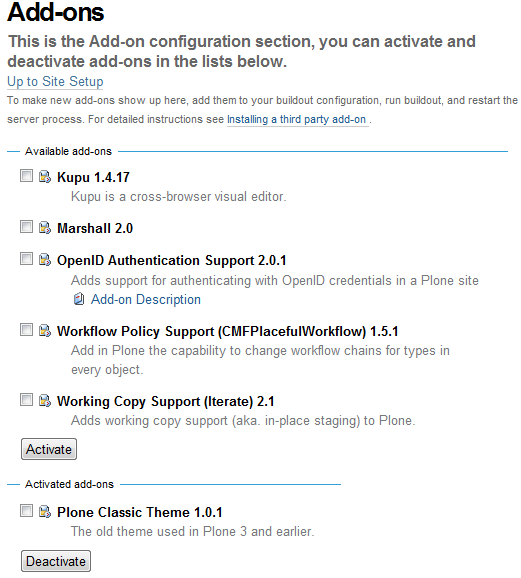
▲圖1 擴充模組的清單畫面
Add-on 有時候被稱為 Third Party Product，或直接稱為 Product，原則上就是提供特定功能服務的一組軟體。舉例來說，想要為 Plone 網站新增 OpenID 服務支援，只要勾選 OpenID Authentication Support 項目，點擊 Activate 按鈕即可。想要停用 OpenID 服務的話，同樣是勾選後點擊 Deactivate 按鈕，此功能相當直覺。
那麼，該去哪兒尋找更多的擴充模組呢？
擴充模組集散地
Plone 官網的 Downloads 頁面，分門別類地整理了許多擴充模組，是專屬的集散地，欲找尋擴充模組時，應優先到這裡查詢。
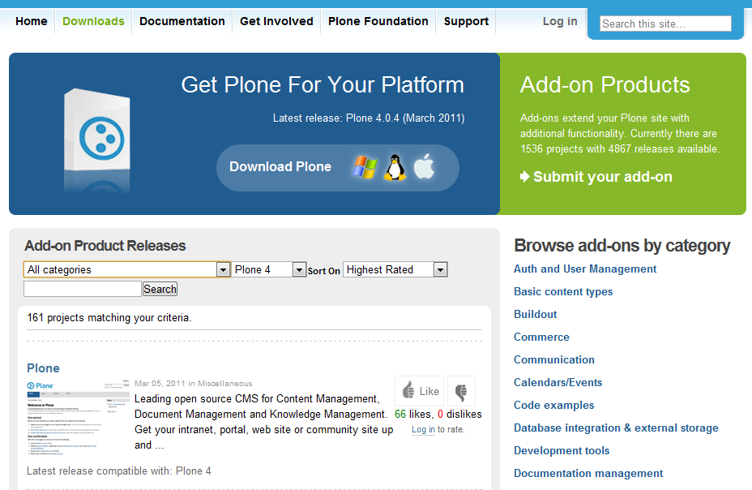
▲圖2 Plone 官網下載頁面
除了閱讀擴充模組的摘要說明之外，通常我們最關心它的支援版本，例如是否能夠支援 Plone 4 版本。
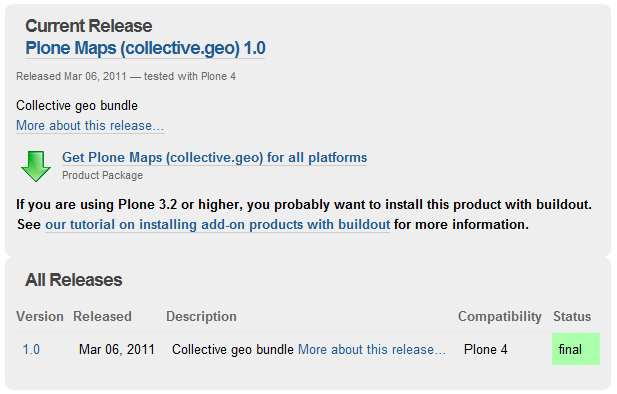
▲圖3 擴充模組版本相容資訊
如果在 https://plone.org/products 沒有找到想要的擴充模組，請再到 https://pypi.python.org/ 網址查詢，這裡被稱為 Python Package Index，縮寫是 PyPI，有時直接用 Cheese Shop 當暱稱，是 Python 軟體的集散地。
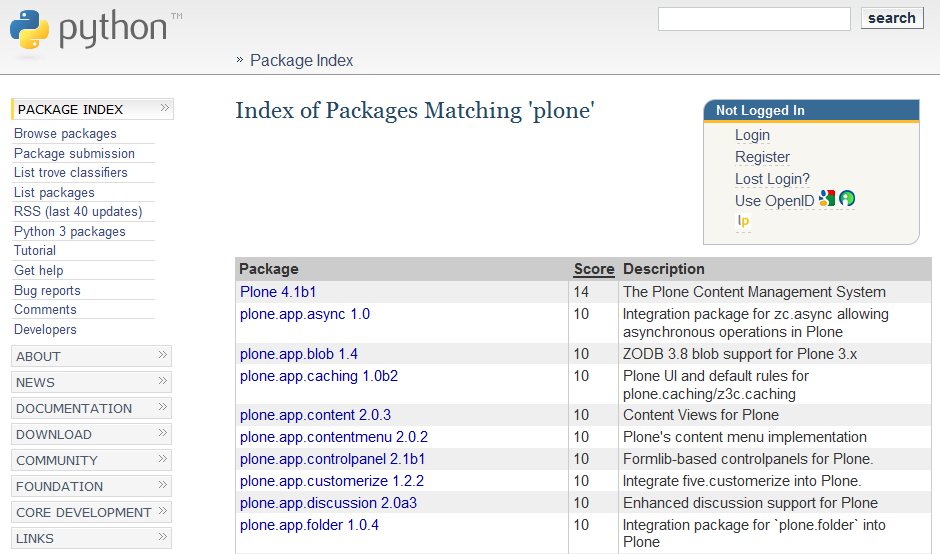
▲圖4 Python Package Index 網站
使用關鍵字在 PyPI 找各式軟體元件，它會依照分數 (score) 排序，列出所有相關的元件。元件的網頁內容主要包括版本號碼、摘要資訊、下載網址、詮釋資料......等。
一般的 Python 軟體元件，如果單純只是一個 egg 檔案，通常是使用 setuptools 裡的 easy_install 工具來安裝。以軟體元件 docutils 為例，可以仿照圖 5 的執行指令，將 docutils 安裝至系統裡。
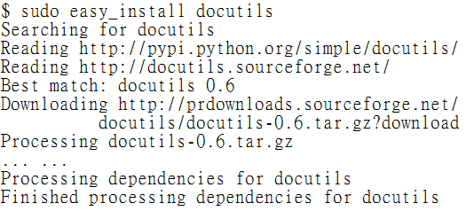
▲圖5 使用 easy_install 安裝 docutils
安裝擴充模組
透過 egg 來安裝軟體元件，雖然很方便，但 setuptools 預設只會找元件的最新版本，有時反而會造成困擾。因為管理一個專案時，可能不需要用到元件的最新版本；另一方面，安裝元件只是專案開發的環節之一，通常還需要進行軟體設定，結合自製的元件，反覆測試，最後才能選出相容性最高且最穩定的元件版本。這時候，如果搭配合適的專案管理工具，開發專案的負擔就有機會減輕。
buildout 就是這樣的工具。只要管理 buildout.cfg 之類的設定檔，就可以自動下載 egg 檔案，安裝並設定想要的 Plone 系統，有效處理軟體相依或版本混亂的問題，也可以同時管理多種開發環境。
下列以 Collective Geo 為例子，示範安裝擴充模組的步驟。這個模組能新增地圖欄位，讓內容項目加入地理資訊。請到 https://plone.org/products/collective.geo 閱讀它的詳細描述，包括安裝說明。
buildout 搭配的設定檔，以 .cfg 為副檔名，最重要的是 buildout.cfg 這個檔案，我們要修改它的內容，加入擴充模組 Collective Geo 的資訊。
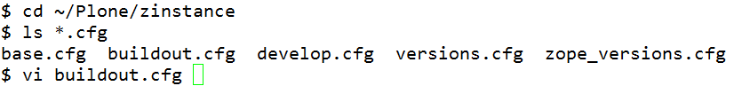
▲圖6 buildout 搭配的設定檔
首先，可以用「eggs =」當關鍵字，搜尋 eggs 的參數設定，預設會看到 Plone 與 PIL 的設定值，前面有四個空白字元。這是 Python 設定檔的標準格式。我們想要新增安裝 Collective Geo，設定方式是在新的一行，輸入四個空白，再把 collective.geo.bundle 加上去。
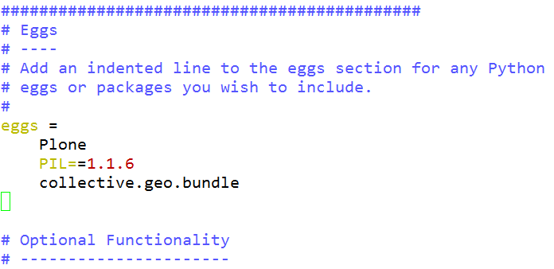
▲圖7 編輯 eggs 參數設定
由於 collective.geo 在安裝過程有許多軟體相依關係需要維護，其中相依的 plone.app.z3cform，還要額外指定對應的軟體版本清單。這類的對應清單，平常由 Plone 開發人員維護，稱為 Known Good Versions 或 Known Good Sets，有時也簡稱為 KGS，網站 https://good-py.appspot.com/ 是維護 KGS 的集散地。
指定 KGS 的方式，是用「extends =」當關鍵字，搜尋 extends 的參數設定，把 https://good-py.appspot.com/release/plone.app.z3cform/0.5.3-1 的網址加入。
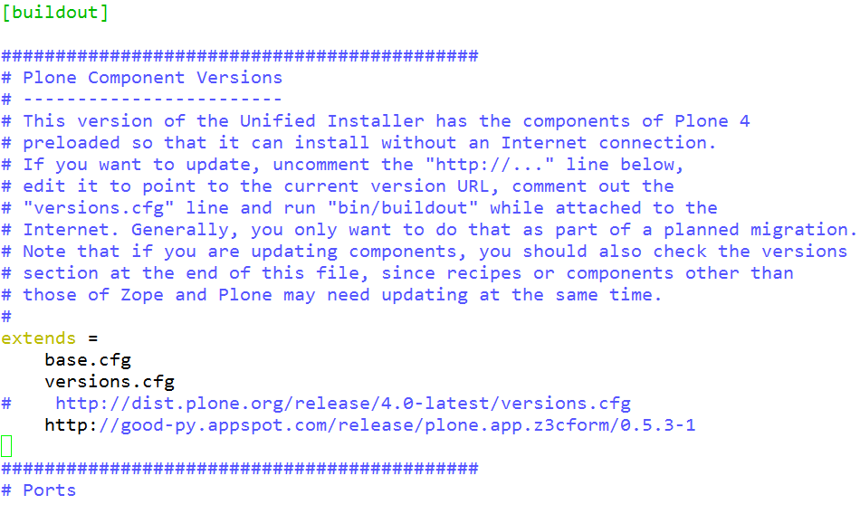
▲圖8 編輯 extends 參數設定
編輯 buildout.cfg 後完成存檔，執行 bin/buildout 讓設定值生效。執行 bin/plonectl 啟動系統後，再到 Site Setup 裡的 Add-ons 啟用擴充模組，勾選「Plone Maps (collective.geo)」並點擊［Activate］按鈕。它會自動啟用其他相依的模組項目。
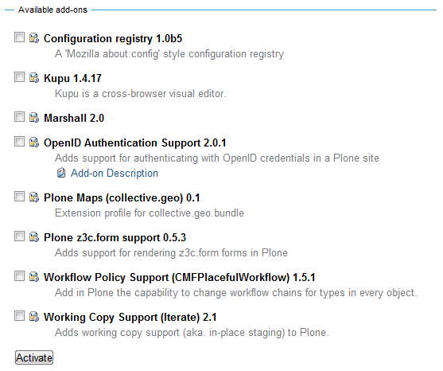
▲圖9 啟用 Plone Maps 擴充模組
設定擴充模組
以 Collective Geo 為例，真正使用它之前，還要到 Add-on Configuration 設定軟體預設值，請點擊［Collective Geo］項目，進入它的設定畫面。
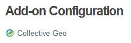
▲圖10 Add-on Configuration 設定畫面
首先，要決定地圖的預設經緯度和放大的級數，預設的地圖是 OpenStreetMap 的畫面。
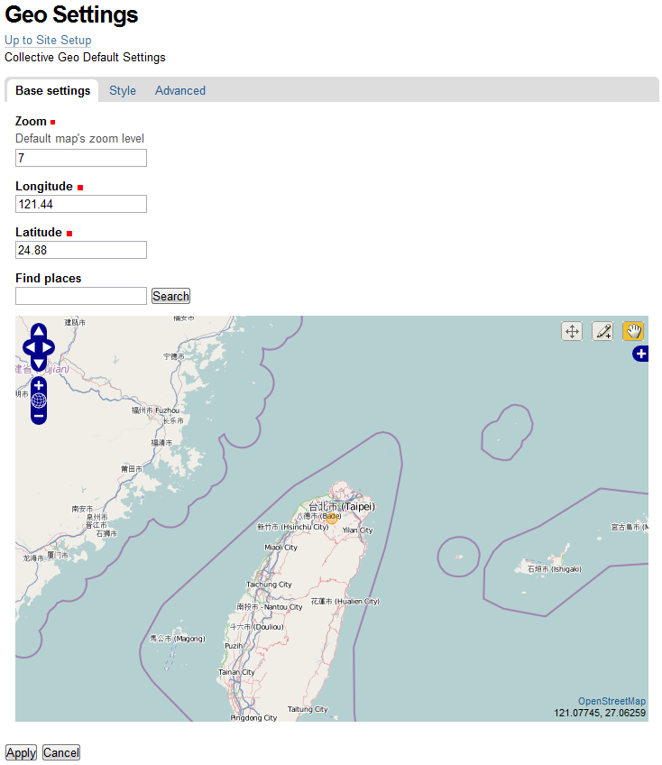
▲圖11 Base Geo Settings 設定畫面
接著，要決定哪些內容類型搭配這項地圖功能，具備地圖功能的類型稱為 Georeferenceable Content Type，把想要的項目從左邊方框移到右邊方框，點擊 ［Apply］ 按鈕完成設定。
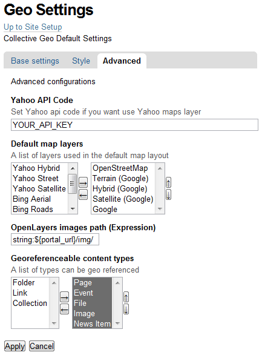
▲圖12 Advanced Geo Settings 設定畫面
使用地圖功能
地圖功能生效後，原本【View】頁籤的右方，會出現新增的【Coordinates】頁籤。點選後可以看到 Base Layer 的地圖畫面，利用方向和放大縮小按鈕，可以決定可視區域的畫面。接著，依照想要標示的形狀種類，例如［點座標］、［線座標］、［面座標］等，再從地圖右上方分別點選［筆按鈕］、［線按鈕］、［面按鈕］。點座標的決定，只需要在地圖上按一下，線和面座標是由數個點所構成，要在地圖上將最後一點按兩下，才能做確認。地圖下方會顯示選定的座標值，使用 WKT (Well Known Text) 格式來記錄。
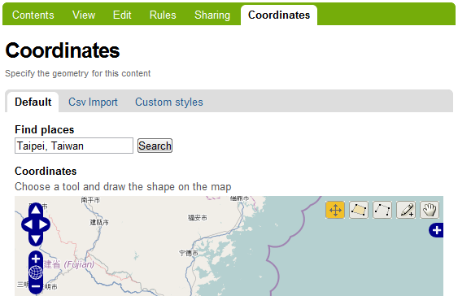
▲圖13 地圖功能編輯畫面
想要切換 Base Layer 的話，可以點擊地圖右上方的［藍底十字符號］，預設是在 OpenStreetMap 和 Google Maps 之間進行初換。如果有其他「Overlay」選項的話，也可以進行勾選。
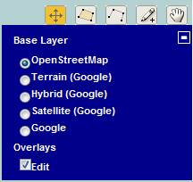
▲圖14 切換 Base Layer 和 Overlay
完成地圖編輯後，顯示內容項目即包含地圖畫面，且同樣可以執行地圖的顯示操作，包括切換 Base Layer 與 Overlay 等。
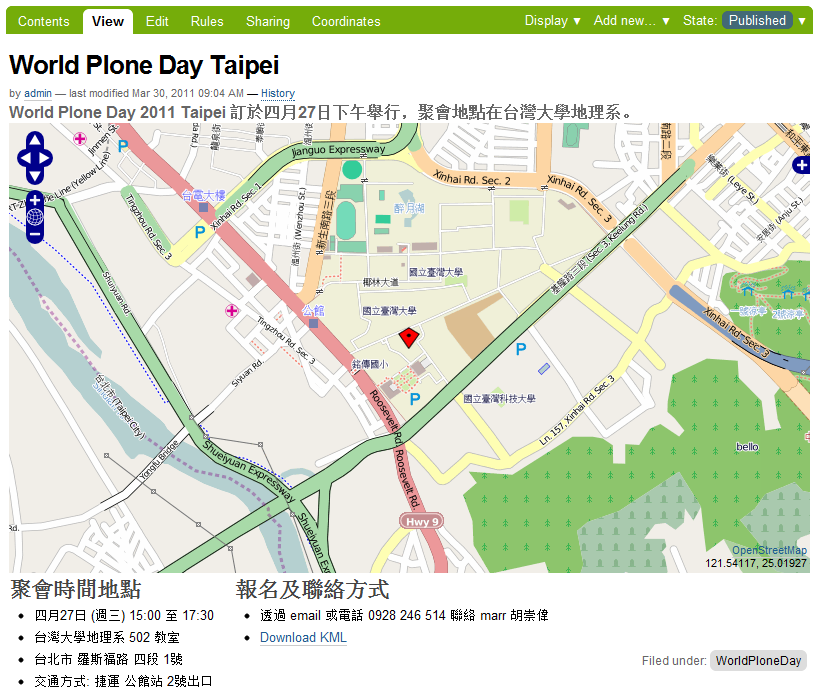
▲圖15 內容項目與地圖搭配呈現
以上內容看起來似乎不錯，那麼，背後的運作原理是什麼呢？
內容型別框架
Plone 4.0 預設使用 Archetypes 做為內容型別框架。什麼是內容型別呢？之前提過的 Page、News Item 等，稱為「內容項目」，它們就是「內容型別」的具體呈現。拿 Python 的物件體系做比擬，可以想像內容型別是 class，內容項目就是 instance。
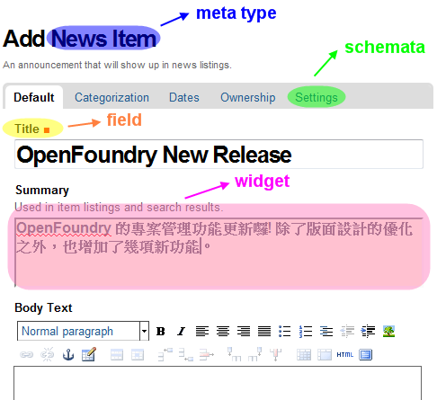
▲圖16 內容項目與內容型別的對應範例
我們可以在檔案系統裡，找到 Archetypes 相對應的程式碼內容，請到 Plone/buildout-cache/eggs/Products.Archetypes-1.6.4-py2.6.egg 的目錄，查看它的檔案細節。關於內容型別，最基本的技術細節在於 Field、Widget 和 Schema。
Schema 姑且可以譯為「基模」。它是一個 container 物件，定義了項目物件的結構，特別是內容項目的屬性值，例如欄位、編輯方式、儲存方式、顯示方式等。每個欄位的屬性值，是由 Field class 來定義，同時，每個欄位又搭配一個 Widget，它負責具體呈現 Field 的工作。詳細的 Field 和 Widget 說明，可以參考 https://plone.org/documentation/manual/developer-manual/archetypes/fields 內容。
一個 Schema 還可以有數個 Schemata，目的是將欄位進行分組，例如編輯內容項目時，分成 Default、Categorization、Settings 等編輯頁籤。
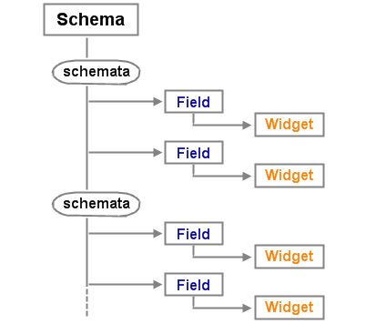
▲圖17 Schema Field Widget 的關係示意圖
預設型別定義
Archetypes 框架提供三個基本的 Schema 定義值：
- BaseSchema
- BaseFolderSchema
- BaseBTreeFolderSchema
根據這些 Schema，也預設提供四個基本內容類別：
- BaseContent
- BaseFolder
- OrderedBaseFolder
- BaseBTreeFolder
Folder 屬於 container 物件，可以包含其他內容型別。另外，Ordered 物件可以指定排序，但存取效能較差，只適於項目數量不多的目錄。相反的，BTree 物件在系統內部的存取效能較好，但不能指定排序。開發者可視需要選擇合適的預設型別，才是聰明的作法。
由於 Archetypes 是 Plone 的預設型別框架，預設的內容項目模組，稱為 ATContentTypes，其中的 AT 就是 Archetypes 的縮寫。ATContentTypes 的實作沿用了上述的基本內容類別，並提供開發者擴充內容型別的基礎。
範例程式碼
我們擷取 Plone/buildout-cache/eggs/Products.ATContentTypes-2.0.6-py2.6.egg/Products/ATContentTypes/content/newsitem.py 當作範例，並簡化程式碼內容片斷如下，藉此可以一窺 Archetypes 的實作方式：
from Products.Archetypes.atapi import Schema
from Products.Archetypes.atapi import TextField
from Products.Archetypes.atapi import ImageField
from Products.Archetypes.atapi import ImageWidget
from Products.Archetypes.atapi import RichWidget
from Products.ATContentTypes.content.schemata import ATContentTypeSchema
ATNewsItemSchema = ATContentTypeSchema.copy() + Schema((
TextField('text',
required = False,
widget = RichWidget(
description = '',
label = _(u'label_body_text', u'Body Text'),
)
),
ImageField('image',
required = False,
widget = ImageWidget(
description = _(u'help_news_image',
default=u'Image will be scaled to a sensible size.'),
label= _(u'label_news_image', default=u'Image'),
)
),
)
)
finalizeATCTSchema(ATNewsItemSchema)
透過 ATContentTypeSchema.copy()，我們複製了基本 Schema 的定義值。像 Title 或 Summary 欄位就直接繼承沿用，不必從頭造輪子，只要再加上需要的擴充定義。例子裡的 'text' 和 'image' 分別是 TextField 和 ImageField，它們搭配 RichWidget 和 ImageWidget 來呈現，比對圖 18 的畫面，可以看到呈現效果。
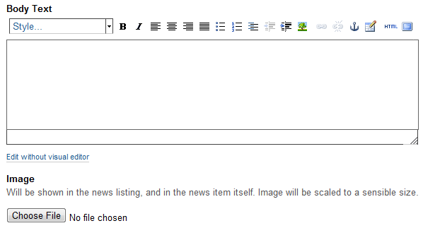
▲圖18 RichWidget 和 ImageWidget 呈現效果
從後台管理介面觀察
Plone 系統的後台稱為 Zope Management Interface，簡稱為 ZMI，透過 https://localhost:8080/manage 之類的網址，可以進入 ZMI 後台管理介面。
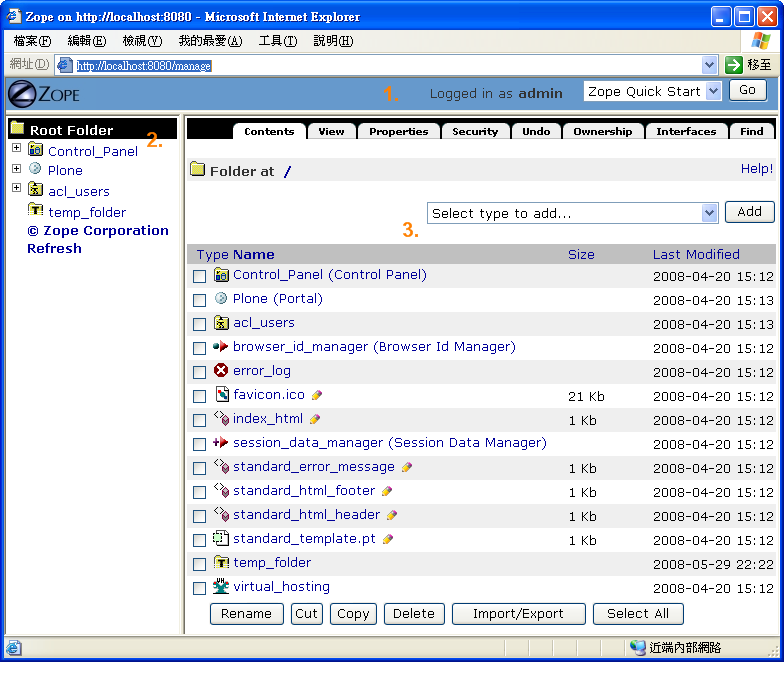
▲圖19 ZMI 管理介面
上述程式碼，除了存放在檔案系統外，它們的定義值也可以從 ZMI 觀察，甚至進行修改，修改的結果會記錄在 ZODB 裡。進入 ZMI 的 portal_types 裡，可以看到預設內容型別的屬性定義值。
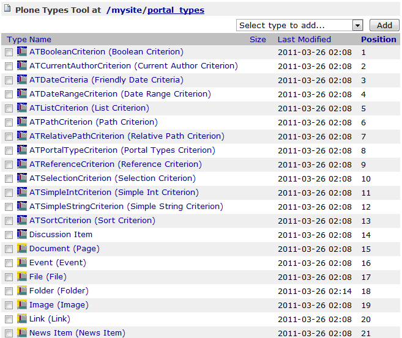
▲圖20 portal_types 畫面
以 News Item 為例，它的操作行為包括代表圖示、新增時呼叫的函式、顯示時呼叫的函式等，都能藉由網頁方式來觀察或修改。
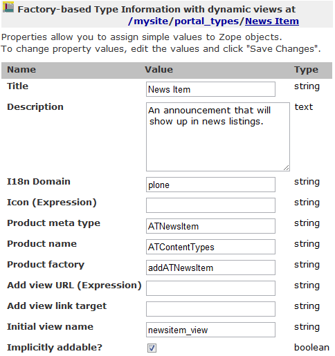
▲圖21 News Item 的屬性值
結論
從 Plone 4 開始，另一個稱為 Dexterity 的框架，正在積極發展，它結合新版 CMF、Zope 3 的技術與功能，希望有一天能正式取代 Archetypes。
Dexterity 具備下列幾項改良之處：
* Dexterity 具備更高的模組化程度，更容易整合 SQL 資料庫。
* Archetypes 使用 accessor 與 mutator 來處理設定值，Dexterity 則使用 attribute notation 方式來處理，因此 Archetypes 的寫法類似 context.getFirstName()，而 Dexterity 是 context.first_name 這樣的寫法。
* Archetypes 自有的 field 和 widget 要配合內容物件的脈絡來運作，並不容易被應用在獨立表單上，Dexterity 則使用 z3c.form 函式庫，這是表單運作的標準工具。
* Dexterity 透過 z3c.form 來支援表單新增的功能，這代表它不需要用到 portal_factory，執行效率能夠改善。
不過，Archetypes 是一個成熟的內容型別框架，支援許多 Widget 類型，並且被廣為應用，一般的開發場合，使用 Archetypes 仍是最穩健的方案。預計在 Plone 5 問世的時候，Dexterity 會成為預設的內容型別框架。
您也許有興趣閱讀以下文章:
- 用自由軟體 Plone 來架設網站(10)－連接資料庫 - 2011-08-05
- 用自由軟體 Plone 來架設網站(9)－多媒體結合 - 2011-07-25
- 用自由軟體 Plone 來架設網站(8)－內容查詢 - 2011-07-12
- 用自由軟體 Plone 來架設網站(7)－版型調整 - 2011-06-28
- 用自由軟體 Plone 來架設網站 (6)－動態網頁 - 2011-06-09
- 用自由軟體 Plone 來架設網站 (5)－元件架構 - 2011-05-20
- 用自由軟體 Plone 來架設網站 (4)－建立專案 - 2011-05-04
- 用自由軟體 Plone 來架設網站 (3)— 內部設定 - 2011-04-25
- 用自由軟體 Plone 來架設網站 (1)— 基礎安裝 - 2011-03-21
專欄總覽


自由軟體鑄造場 製作 最佳瀏覽狀態：IE7或Firefox2.0以上 (建議使用Firefox) ‧ 解析度1024*768
E-Mail：contact@openfoundry.org Address：台北市南港區研究院路2段128號 中央研究院資訊科學研究所 . 隱私權條款. 使用條款
E-Mail：contact@openfoundry.org Address：台北市南港區研究院路2段128號 中央研究院資訊科學研究所 . 隱私權條款. 使用條款
評論
另外，在 Windows 環境下，如果 addon 需要 C compiler，還得額外安裝 Visual Studio 或 MingW 之類的東西，可能是一項挑戰。
簡言之，安裝複雜的 addon 時，使用 Ubuntu Linux 可能較單純，或是請參考 plone.org/.../... 的說明。